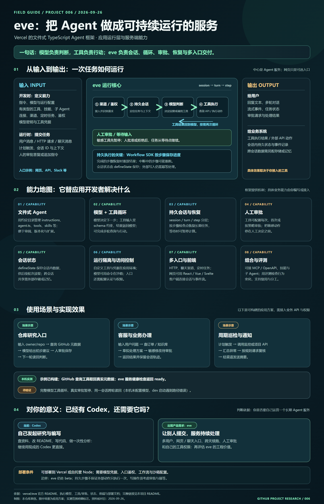

把多步 Agent 运行成服务
管理会话、工具循环、人工审批、暂停恢复与多入口接入；业务知识和可执行动作需要由开发者提供。
PROJECT 006 / VERCEL EVE
eve 是用来开发 Agent 后台服务的 TypeScript 框架。你定义模型、指令、工具与入口；它组织多轮执行、会话进度、人工审批和暂停恢复。网页可以连接这个服务。
本页是独立制作的教学演示。它查询真实 GitHub 数据，但不运行 eve 或大模型；真正的 eve 示例代码见下方。

01 / 理解摘要
先分清框架提供的运行机制、你要接入的业务能力，以及这次研究真正验证到的范围。
管理会话、工具循环、人工审批、暂停恢复与多入口接入；业务知识和可执行动作需要由开发者提供。
请求进入会话后，模型决定调用工具或回复；工具结果再交给模型。Workflow SDK 在步骤边界记录进度，等待审批后继续。
Agent 定义、入口鉴权、会话工作流、模型与工具、审批与状态、前端与部署。沙箱隔离命令环境，连接层接外部 API。
输入包括指令、模型与工具配置，以及用户消息、定时触发和审批答复；输出是回复、事件、工具动作与会话状态。
仓库研究受理、客服查询与复核、周期巡检与通知等都可以构建；具体 API、权限和数据存储仍需接入。
你自己发起研究、写条目，用 Codex 更直接。要让多用户提交任务、跨天续跑并审批业务动作时，再考虑 eve。
02 / 动手体验
输入公开 GitHub 仓库，页面实际读取仓库元数据，再让你操作一次审批。每一步对应 eve 示例中的一项能力。
格式：owner/repo。点击后直接请求 GitHub 公共 API；无需登录。
演示边界 此页用浏览器代码模拟会话与审批；建议由明确标注的固定规则产生。它不会调用模型、运行 eve、写入项目库或发送审批给其他人。
真实应用交给 eve；本页在浏览器中演示。
读取公开仓库信息，保留来源与时间。
实际 Agent 由模型判断；这里用固定规则说明位置。
人决定是否保存这条初步判断。
下一轮询问时返回已批准的判断。
开始研究后，这里显示真实 GitHub 元数据。
查询完成后出现初步建议。此页的建议由固定规则生成，专用于理解审批节点。
尚无会话记录。
03 / 模块与能力
这是帮助理解的功能拆分；可以按产品需求逐步组合，并非官方类图。
指令、模型、工具和技能按文件组织；行为与权限边界可在项目中审阅。
查看文件结构 ↗HTTP、网页、聊天渠道或计划任务交付消息；渠道与路由鉴权决定谁能进入。
查看渠道 ↗任务按 session、turn、step 运行，步骤完成后保存进度；中断步骤可能重跑。
查看恢复原理 ↗模型选择有输入约束的工具；工具可查询 API 或执行应用代码，命令能力可放入沙箱。
查看工具机制 ↗敏感工具先等人批准；会话状态供后续轮次读取。跨会话数据需另接存储。
查看审批规则 ↗前端显示回复、事件和审批；可部署成服务，并用评测检查行为变化。
查看前端接入 ↗04 / 使用场景
这些是可构建的产品方案，需要你接入相应的数据、工具和权限；eve 本身不提供这些业务结果。
网页接收仓库名，工具读取公开资料；Agent 给出有来源的初步判断，发布或保存前由人复核。下一轮仍可接着同一会话。
适合：研究条目开始由多人提交时通过聊天入口查询订单、工单或知识库。模型提出处理方案，涉及退款、写入或通知时，先交给有权限的人批准。
适合：需要流程控制和操作留痕时计划任务触发 Agent 查询监控或项目 API，汇总变化，再通过渠道发送摘要；需要业务动作时加入审批和幂等处理。
适合：持续巡检而非一次性问答时05 / 部署方式
eve 主要是运行 Agent 的后台服务。网页是它的一种交互界面。你可以把 eve 部署在 Vercel，也可以作为 Node 服务自行托管，并在网页中接入会话 API。
本页是部署在 GitHub Pages 的静态研究站点；发布网页不会自动部署真实的模型 Agent。真实服务还需要模型凭据、访问控制、运行环境和工具配置。
06 / 对我的价值
由你发起研究、核对资料、写 README 或维护代码，现成的 Codex 更直接。
当你要让别人从网页或聊天软件提交任务，并让自己的服务长期运行、保存会话和处理审批，eve 才体现价值。